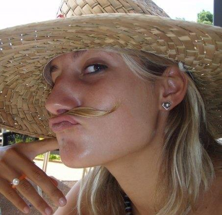

About me
I was born in the south of France in Bordeaux on Dec 16th, 1989. I lived there until I was five years old, then my family decided to move to Australia.
I started kitesurfing in 2005 with my father in Sydney. Since I was little I was drawn towards water sports. Kitesurfing is a sport that completely fulfills my passion for the water and has many characteristics of many other sports combined in one.
Kiteboarding has led me to so many places all around the world! Wherever I go, I always take my boards and my kites with me. There are still so many places I would like to discover such as: Venezuela, Turkey, Brazil, Greece, Canary Islands, Morocco, Mexico, etc.